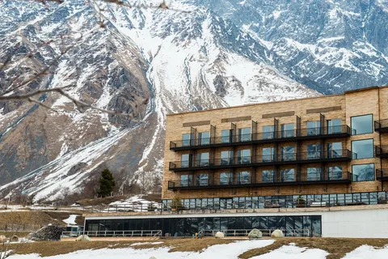

|
Апарт-отель Rock First Line расположен в Батуми, в 100 м от пляжа на Черном море и в 800 м от аквапарка Батуми. К услугам гостей номера с бесплатным Wi-Fi.Во всех номерах есть балкон с видом на море, кондиционер, пол с подогревом, телевизор с плоским экраном и кабельными каналами, холодильник, чайник и собственная ванная комната с душем и бесплатными туалетно-косметическими принадлежностями. В люксах и апартаментах обустроена кухня с холодильником и плитой.Каждое утро для гостей сервируется континентальный завтрак. По запросу осуществляется доставка продуктов из ресторана. Гости могут заказать кофе и безалкогольные напитки.В отеле Rock First Line работает круглосуточная стойка регистрации и бар. Гостям предоставляются услуги трансфера. В отеле работает экскурсионное бюро. |
|
ORBI CITY GE — это апартаменты в районе New Boulevard города Батуми, расположенные на расстоянии 700 м и 4,1 км соответственно от следующих достопримечательностей: Пляж Батуми и Скульптура Али и Нино. Гостям предоставляется бесплатный Wi-Fi на всей территории.ORBI CITY GE располагается на расстоянии 6,7 км и 10 км соответственно от таких достопримечательностей, как Железнодорожный вокзал Батуми и Крепость Гонио. |
| 
Отель Kazbegi расположен в поселке Степанцминда у подножия горы Казбек, в 7 км от Троицкой церкви XIV века в Гергети. К услугам гостей лобби-бар с библиотекой и бесплатный Wi-Fi.В числе удобств ванная комната с душем.В стильном ресторане при отеле Rooms Kazbegi с элементами декора из дерева подают блюда интернациональной кухни. В лобби-баре можно почитать книгу и заказать напитки. Гостям могут подать блюда на террасе с видом на горы.За дополнительную плату для гостей организуют экскурсии по ознакомлению с местной культурой и кулинарные мастер-классы.От отеля Rooms Kazbegi до автобусной остановки Kazbegi, от которой можно доехать до Тбилиси, 10 минут ходьбы. Расстояние до международного аэропорта Тбилиси имени Шота Руставели составляет 185 км. За дополнительную плату гостям организуют трансфер от/до аэропорта.Парам особенно нравится расположение — они оценили проживание в этом районе для поездки вдвоем на 9,6.Расстояние, указанное в описании, рассчитано с помощью. |